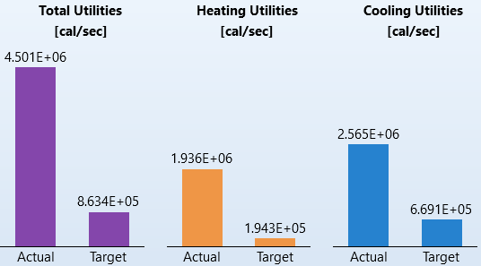
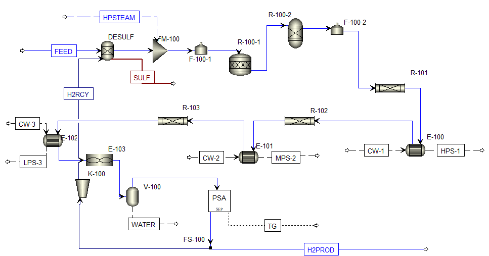

M.Eng. Design Project · 2026 · In progress
Hydrogen plant by steam methane reforming
Steam methane reforming turns natural gas and steam into hydrogen. Our team is designing the plant end to end. I'm building the Aspen Plus flowsheet and the heat integration.
- Hydrogen product
- 1,053 kg/h (≈25 t/day)
- Purity after PSA
- 99.99 mol% H₂
- Steam-to-carbon
- 2.6
- Steam raised
- 13.1 t/h (HP, MP, LP)
From the Aspen Plus results of the current converged flowsheet.
What I'm doing
- Built the Aspen Plus flowsheet with kinetics from the literature for the primary reformer and the high- and low-temperature shift reactors.
- Completed a pinch analysis in Aspen Energy Analyzer to set utility targets and guide the heat-exchanger network design.
- Now sizing equipment and costing streams, and comparing feed-gas sources.
Energy saved by heat integration
15.2 MW
less utility use is possible with full heat recovery: 81% below what the current flowsheet uses. Heating alone could drop by 90%.
Aspen Energy Analyzer compares the heating and cooling the flowsheet uses now ("actual") with the minimum a fully heat-integrated plant would need ("target"). The gap is the heat that could be recovered between process streams instead of being bought as steam or thrown away to cooling water. Values converted from Aspen's cal/s output.

Flowsheet
